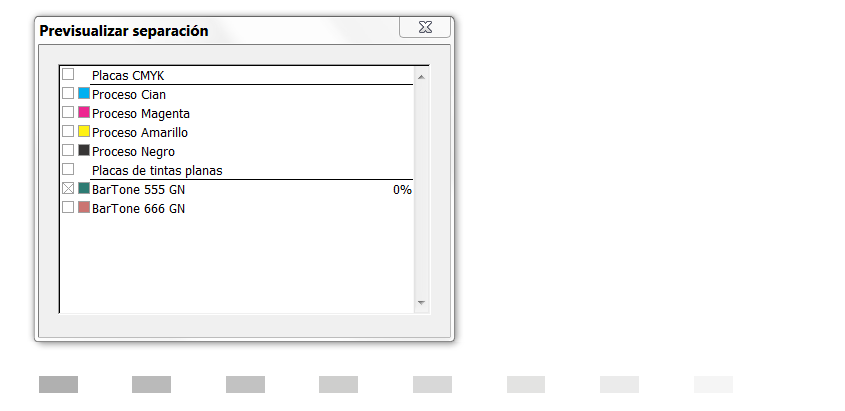

The colorspace package for LaTeX
Spot colors, mixed inks and other tools for PDF colorspaces
Modified: 2016-10-13
The aim of this package is, as the name implies, to provide tools for
PDF color spaces. It requires xcolor, which is loaded if it
has not been before. It seems to work with tikz.
Currently (v 1.2.0) it supports what I think are the most common tools:
- Spot colors (CMYK and CIE LAB), with a clean user interface, and
including tints (with the
!notation). For example, to define a spot color, just say:
\definespotcolor{foo}{BarTone 555 GN}{.3, .4, .5, .6}
- Proper switching of color spaces.
- Mixed spot and process colors (up to 4), like shades (ie, a spot color with black).
- ICC based default CMYK, RGB and Gray spaces (one or many)
- Overprinting (across pages, using the color stack).
Currently only pdftex and luatex are supported. Support for
xetex is on the `to do’ list, but due to the limitations of this
engine this task is somewhat challenging and I’m not sure all features
will be implemented.
Calibrated colors, although not directly supported, can be defined with an ICC profile created with, for example, LPROF and then assigned to a default space.
The following image shows a plate for a spot color.

Road map
- Cleaning the code up. Currently there are a few huge functions. They must be splitted into smaller chunks performing a single task each. Priority: high.
- Error catching. Priority: high. Currenly some errors just yield unexpected results.
- Tools for common use cases, including a cleaner way to define mixed inks. Varying priority.
- Support for XeTeX and/or dvips. Priority: low – sorry, but you can contribute code.
- RGB spot colors. Priority: middle. Trivial, but I’d like to clean the code up before.
- RGB mixed spaces. Priority: middle. Useful for PDF “tint transforms” when mixing Lab spaces.
- Lab mixed inks. Already available if the user provides a CMYK alternative (RGB will be added soon). Relatively easy with a linear transformation, but far from trivial for a proper conversion based on an ICC profile. Priority: low. Maybe linear transformations could be done with pdftex, but the latter clearly is best done with luatex (or an external tool, even if feasible with pdftex).
- Hexachromatic process. Priority: middle-low, but it doesn’t fit well with the xcolor internals, so a good deal of additional code will be necessary. The same aplies to color spaces with more than 4 channels in general.
- Calibrated spaces (by hand, because currently you can assign an external ICC profile to the default spaces). Not difficult, based on the parameters provided by the user. Priority: middle.
- Indexed spaces. Priority: low. Not difficult. Mainly intended for images, so I wonder if a better place is a graphics package.
- PDF “mixing hints”. Not difficult, I think. Priority: middle. The same applies to halftone parameters.
- Spectral data. Who knows—.
Free downloads
A present?
The packages listed here are free – you don’t have to pay anything to use them. However, if you have found them useful enough as to give me a little present, I would be very grateful. Just go to the following wish list at Amazon.
Donate
You might consider supporting the development of these packages with a donation, too.